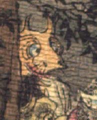

鬼。頭に2本角が生え、目玉が大きい。鼻はカバのようで、鼻毛が飛び出ているように見える。口は横に裂けている。白い着物を着て、木の横にいる。
著作者：J.Dautremer／出典：親書誌：U426_nichibunken_0123：Le vieillard et les démons／日付：2006／資源識別子：U426_nichibunken_0123_0003_0001
Copyright (c)2010- International Research Center for Japanese Studies, Kyoto, Japan. All rights reserved.